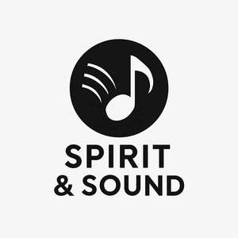

Trade Mark Journal No.2025/044 31 October 2025
UK00004281672 21 October 2025 (41)

- Class 41
- Recording of music; Music recording; Music publishing and music recording services; Presentation of music concerts; Music concerts; Music publishing; Publishing of music; Publication of music; Production of sound and music recordings; Production of music concerts; Production of podcasts; Production of music; Music production; Live music concerts; Music recording studio services; Music performances; Jazz music entertainment services; Music education; Live music shows; Teaching of music; Pop music concerts (Organisation of -); Music concert services; Publication of music books; Music festival services; Organisation of music concerts; Live music performances; Production of music shows; Entertainment services for sharing audio and video recordings; Live music services; Rental of phonographic and music recordings; Performance of music; Providing age ratings for television, movie, music, video and video game content; Production of video and audio recordings; Selection and compilation of pre-recorded music for broadcasting by others; Tuition in music; Rental of audio tapes bearing recorded music; Sound recording and video entertainment services; Music entertainment services; Musical concerts by radio; Instruction in music; Provision of entertainment via podcast; Music instruction; Audio, film, video and television recording services; Production of educational sound and video recordings; Performance of music and singing; Publication of sheet music; Music publishing services; Music cassettes (Rental of -); Creation [writing] of podcasts; Music mixing services; Music library services; Audio and video recording services; Organising of festivals relating to jazz music; Arranging of music shows; Music production services; Production of sound and video recordings; Radio entertainment; Direction of music performances; Performance of dance, music and drama; Providing digital music [not downloadable] from MP3 internet websites; Production of audio recordings; Entertainment services for matching users with audio and video recordings; Music group services; Creation [writing] of educational content for podcasts; Provision of live music; Digital video, audio and multimedia entertainment publishing services; Production of audio entertainment; Production of musical videos; Exhibition of video film sound tracks; Arranging of music performances; Audio and video production, and photography; Consultancy on film and music production; Radio entertainment production; Providing digital music from the internet; Post-production editing services in the field of music, videos and film; Audio recording studio services; Audio, video and multimedia production, and photography; Production of video recordings; Presentation of musical concerts; Performing of music and singing; Music composition services.
sharon Watmai